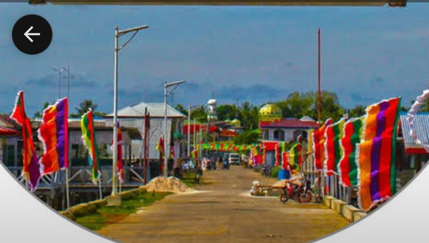

Learn Python without needing the internet.
PyKnowledge is a free course built for TRAC, BARMM, and CHED students. Install it once on a shared computer or your own phone, and every lesson, exercise, and quiz keeps working — connection or not.
Seven modules, in order
Each module unlocks once you've finished the one before it — so you always know exactly what's next, with no wrong turns.
-
1
Start here →
Getting Started with Python
What Python is, installing nothing, and running your first line of code.
-
2
Variables & Data Types
Storing values, naming things well, and Python's core building blocks.
Module 2Storing values, naming things well, and Python's core building blocks. -
3
Loops
Repeating work with
forandwhile, without repeating code.Module 3Repeating work withforandwhile, without repeating code. -
4
Conditionals
Making decisions in code with
if,elif, andelse.Module 4Making decisions in code withif,elif, andelse. -
5
Functions
Packaging logic you can reuse, with inputs and return values.
Module 5Packaging logic you can reuse, with inputs and return values. -
6
Data Structures
Lists, dictionaries, and tuples — organizing information that matters.
Module 6Lists, dictionaries, and tuples — organizing information that matters. -
7
Final Project
Bring every module together into one program you build yourself.
Module 7Bring every module together into one program you build yourself.
Made for shared computers and patchy signal
Every design choice here starts from the same constraint: this has to work on modest hardware, without a steady connection.
Install once, use anywhere
Add PyKnowledge to your home screen. After that first load, lessons, exercises, and quizzes all run with no connection.
Your progress stays with you
Set a PIN on a shared computer and your progress, scores, and unlocked modules stay separate from the next student.
Real code, real feedback
Write actual Python in the browser and get told exactly what's right, what's off, and why — no waiting on a grader.
Built in Tawi-Tawi, for Tawi-Tawi
PyKnowledge started as coursework for TRAC and BARMM CHED students — the curriculum, the pacing, and the offline-first design all come out of that context.
More about this place